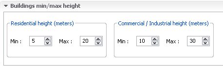

The buildings panel lets you choose some options to customize
the look of generated buildings.
It's composed of 4 sections:
-Facade set : the facade
set used for the generation (the textures of buildings).
-L.O.D : the level of details of buildings. the higher the lod, the farthest you'll see the buildings (it also has an impact on fps).
-Sloped roofs : if
checked, osm2xp will put sloped roofs on buildings. Please note
that the xplane engine has limitations on this point, so not all
buildings will be able to have sloped roofs, and some buildings
will just have a small sloped section.
If your generated scene is crashing in xplane, try to disable
sloped roofs, it may be possible that a building with a very weird
shape has a sloped roof, and that a geometry problem is making
xplane crashes.
-Hard buildings : if
checked , buildings will be hard, meaning planes will crashes on
them (minor fps impact)

This section lets you choose minimum and maximum height for
houses and commercial/industrial buildings.
Please note that if a height value is specified for a building in
the open street map data you're using, this value will be used
prior to your values.
You can have a look at this
page on the openStreetMap wiki for more information about
height tags in osm data.